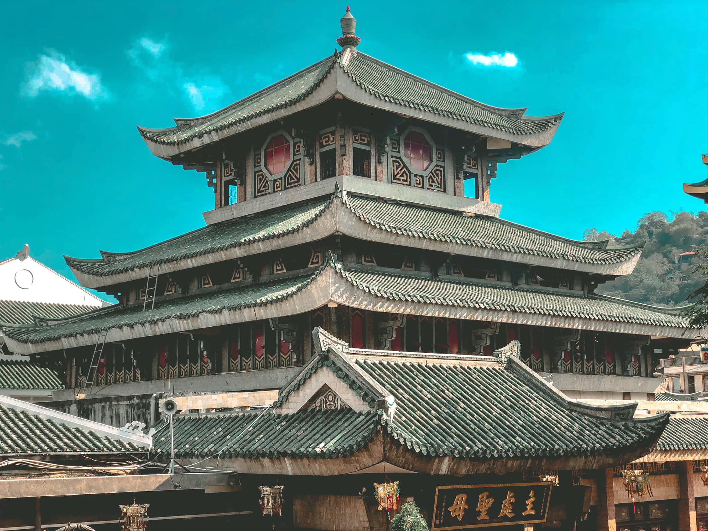

CHÂU ĐỐC

Châu Đốc, một địa danh gắn liền với sự linh thiêng với thế phong thủy tiền tam giang, hậu thất sơn và huyền bí cùng nhiều tín ngưỡng tôn giáo tồn tại từ lâu đời. Nhắc tới mảnh đất này, người ta không thể không nhớ tới Miếu Bà Chúa Xứ Núi Sam là điểm du lịch tâm linh nổi tiếng không chỉ ở miền Tây Nam Bộ, mà ngay cả người Việt ở nước ngoài vẫn biết đến.
Miếu Bà Chúa Xứ tọa lạc dưới chân núi Sam thuộc phường núi Sam, TP Châu Đốc, tỉnh An Giang. Miếu Bà Chúa Xứ có rất nhiều truyền thuyết huyền bí xung quanh hoàn cảnh ra đời của ngôi miếu, được truyền lại từ thế hệ này sang thế hệ khác.
Với sự linh thiêng và ứng nghiệm, cầu được ước thấy khiến Miếu Bà hàng năm thu hút hàng triệu lượt khách đến tham quan, cúng viếng, đặc biệt vào mỗi dịp Tết đến, Xuân về góp phần phát triển ngành du lịch An Giang.
Theo truyền thuyết kẻ lại, cách đây khoảng 200 năm, người dân địa phương tại Châu Đốc đã phát hiện ra tượng Bà ở trên đỉnh núi Sam và muốn đưa xuống. Tuy nhiên, mấy chục thanh niên cường tráng định khiêng tượng Bà nhưng không được. Sau đó qua miệng bà “cô Đồng” bảo chỉ cần 9 cô gái đồng trinh lên khiêng xuống. Nhưng đến chân núi thì tượng Bà bất ngờ nặng trịch không thể đi nữa. Người dân nghĩ Bà chọn nơi đây để an vị ở đây và đã lập miếu tôn thờ.
Một truyền thuyết khác liên quan đến ngôi miếu này, đó là nói về công lao ông Thoại Ngọc Hầu. Khi ông đi dẹp giặc ngoại xâm ở biên giới, bà Châu Thị Tế đã khấn vái Bà Chúa Xứ phù hộ ông dẹp yên giặc, gìn giữ xóm làng bình yên. Để tạ ơn những điều linh nghiệm, ông Thọai Ngọc Hầu cho thỉnh Bà từ trên đỉnh núi Sam về xây một ngôi miếu khang trang dưới chân núi và chọn ngày 24.4 là ngày cúng lễ Bà.
Ngày trước miếu Bà được xây dựng đơn sơ bằng tre lá, nằm quay về hướng tây bắc, phần lưng thì quay về vách núi, còn chính điện nhìn ra con đường và cánh đồng làng. Vào năm 1870, miếu được người dân xây dựng lại bằng gạch hồ ô dước. Trong 4 năm từ 1972 đến 1976, miếu Bà được hai kiến trúc sư Huỳnh Kim Mãng và Nguyễn Bá Lăng tái thiết lớn tạo nên dáng vẻ như hiện nay.
Nguồn: https://thamhiemmekong.com/